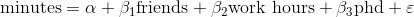

第 15 章 多重回归分析
我不会盯着一个问题看，并往其中添加无用的变量。
——比尔 · 帕塞尔斯
虽然副总对你的预测模型很满意，但是他认为你还可以做得更好。为此，你收集了额外的数据：对于每一个用户，你不仅了解他每天工作多少小时，同时还调查了他是否拥有博士学位。你希望通过这些补充资料来改进模型。
因此，你提出了一个带有更多自变量的线性模型：

显然，用户是否拥有博士学位并非一个数值问题，但如同第 11 章所提到的，我们可以引入一个虚拟变量 ，当这个变量等于 1 的时候，表示用户拥有博士学位，反之则表示没有博士学位，这样就能像其他变量一样将其视为一个数值了。